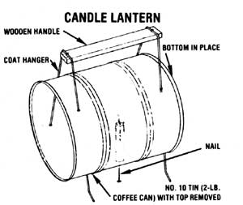

Undoubtedly, most of you have - at one time or another - heard the Boy Scout motto, "Be prepared!" Well, in my 13-year involvement with Scouting, I've found that a big part of being prepared is knowing how to "do more with less" (another phrase that is certainly familiar to MOTHER-readers). And since I've put a good bit of MOTHER's wisdom to use in my BSA program over the years, I'd like to help even things up by sharing a Scouting idea with MOM's readers. It's a special adaptation of the old tin-can lantern, and - though it's nothing fancy - it's darned handy to have around the old homestead when the electricity goes off . . . and it's a great addition to any lowbudget camper's or backpacker's outfit.
Here's how to put together the no-cost little gadget:
Scrounge up a No. 10 tin can or a twopound coffee can . . . a wire coat hanger . . . an inch-long nail . . . a few inches of fine wire of some sort (copper is excellent for this) . . . a stick or narrow piece of wood about six inches long . . . and a candle stub or one of those short, fat kitchen candles. That's your total bill of materials!
Now, start work by straightening out the coat hanger, snipping off both curly ends, and cutting the wire in half. Lay the two pieces aside for a moment and direct your attention to the can. With the lid off the tin, turn the can on its side . . . so that what was the top is now the "front" of the soon-to-be lantern. Next, punch eight holes in the can. The bottom holes should be about twice as far apart as are those in the top. (See the accompanying illustration.)
With that done, go back to your two sections of coat-hanger wire and bend each one in the middle to form a "U". Insert the ends of the wires through the holes in the can-down through the top-so that the tips protrude from the bottom. Let about half an inch of each of the ends poke out, then bend them outward slightly . . . to form "legs" for the lantern and to hold the wires permanently in place. To make a carrying handle, use the copper wire to bind your stick of wood to the undersides of the two coathanger loops extending above the top of the can.
Your final chore is to drive that inch-long nail through the center of the tin's bottom, leaving the nail sticking up as a spike upon which to impale the candle. It's not a bad idea to lock the nail in its hole by dropping a dab of epoxy glue onto its head.
LET YOUR LIGHT SHINE
This make-do device can be safely set on a table or other flat surface or be carried by its wooden handle. You can also use it to light a tent or similar shelter by suspending the lantern in front of your abode's door. [ EDI TOR'S NOTE: It's best not to use any open flame inside a tent.] The shiny back (ex-bottom) of the can will serve admirably as a reflector, while the mouth of the lantern will act as a sort of barrel that allows you to aim the illumination. And if you keep its back pointed into the wind, this little light will shine even in a storm.
|
 |
|
|